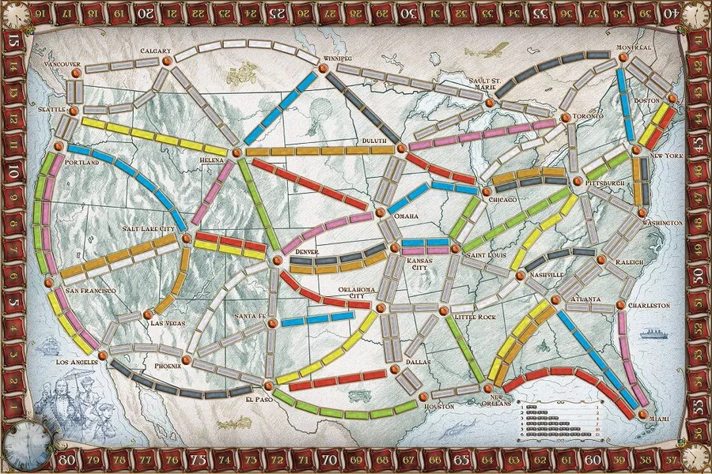

ticket to ride bot breeder
A genetic algorithm that evolves bots to play the game Ticket to Ride. Each bot encodes a strategy as 24 numerical weights, which evolve as the algorithm progresses.
how it works
how the bots play
Each bot in this project uses a heuristic function that determines the quality of every possible move using 24 numerical weights. The bots then pick whichever move has the highest quality.
The genetic algorithm treats the 24 weights as a genome. In the reproduction process, two bots' weights are crossed over and mutated to produce the next generation. After many generations, the population should converge toward ideal weights.
Enter your own parameters into the genetic algorithm below and see what happens! (Below that, you can find a reference with some more detail on how the weights work.)
try it yourself!
results
weight reference
| 1 | Ticket Contribution Factor | Evaluates taking a route that contributes to destination tickets. Weighted by ticket length so working towards longer (harder) tickets matters more. |
| 2 | Longest-Route Aggression | Bonus for a move that would hand the bot the 10-point longest-route bonus outright. |
| 3 | Longest-Route Priority | Bonus proportional to the raw increase in the bot's longest continuous route, regardless of whether it takes the bonus. |
| 4 | Direct Scoring Priority | Boosts priority of moves that earn route points directly (1–15 pts based on route length). |
| 5 | Direct Ticket Priority | Boosts priority of taking routes that would immediately complete a ticket. |
| 6 | Optimal Card Weight | Evaluates a card draw by how much drawing that card reduces the cards still needed to complete each ticket. Weighted by ticket length. |
| 7 | Train Use Specificity | Penalty per train placed on a route. A high value makes the bot picky and discourages claiming routes that don't pay off strategically. |
| 8 | Ticket Draw Aggression | Boosts the value of drawing new tickets when opponents are still early in the game (haven't played many trains). |
| 9 | Ticket Draw Opportunism | Boosts the value of drawing new tickets once the bot has already completed all its current destination tickets. |
| 10 | Ticket Draw Risk Factor | Reduces the attractiveness of new tickets as opponents play more trains. (The bot gets more conservative as the game nears its end.) |
| 11 | Wild Draw Penalty | Penalizes drawing a face-up locomotive (wild card) relative to other face-up cards, since doing so takes a whole turn. |
| 12 | Ticket Inefficiency Penalty | Penalizes claiming a route that forces the bot to use cards inefficiently relative to what its tickets actually need. Weighted by ticket length. |
| 13 | Expected Score Parameter | Estimates baseline move value. Won't affect which moves are preferred (used for parameter range creation and debugging). |
| 14 | Face-Down Draw Priority | Flat bonus added to the priority of drawing a face-down card. Shifts its general preference toward or away from drawing blind. |
| 15 | Ticket Draw Priority | Flat bonus added to the priority of taking new destination tickets. Shifts its general preference toward or away from taking tickets. |
| 16 | Face-Up Draw Priority | Flat bonus added to the priority of drawing a face-up card. Shifts its general preference toward or away from drawing face-up. |
| 17 | Train Play Priority | Flat bonus added to the priority of claiming a route. Shifts its general preference toward or away from playing trains. |
| 18 | Start Ticket Length Aversion | Penalizes starting ticket sets with high train-car cost. High values of this weight make the bot favor shorter, easier tickets at the start. |
| 19 | Start Ticket Overrun Penalty | Extra penalty applied when the total train-car cost of starting tickets exceeds the overrun threshold (weight 20). Captures the risk of overcommitting. |
| 20 | Start Ticket Overrun Threshold | The train-car cost above which the overrun penalty (weight 19) kicks in at game start. High values make the bot tolerate longer ticket sets before penalizing. |
| 21 | Midgame Ticket Length Aversion | Penalizes midgame ticket sets with high train-car cost. Separate from weight 18 so the bot can evolve different risk tolerances by phase. |
| 22 | Midgame Ticket Difficulty Penalty | Penalizes midgame ticket sets that require many additional cards to complete. |
| 23 | Late Game Ticket Urgency | Amplifies the ticket difficulty penalty in the late game; makes the bot more conservative about new tickets when time is short. |
| 24 | Late Game Ticket Refusal Threshold | Controls cutoff for the bot to refuse ticket subsets that would require too many cards to complete (relative to the game's remaining length). |
Try some pre-computed runs to see how different settings impact the performance of the algorithm. Runs are named based on the population size.
evolution results
final population
The top four bots at the final stage of evolution for this run. Click a card to see a full strategy breakdown.
head-to-head: stage 0 vs final
Pit the top-4 bots from the very first generation of this run against this run's top 4 evolved final bots in live game simulations. Each game mixes 2 stage-0 bots with 2 final bots so they compete directly. Games are run in a Python engine in your browser.
what is ticket to ride?
Ticket to Ride is a competitive board game for 2–5 players. Players collect colored train cards and spend them to claim routes between North American cities, racing to complete secret destination tickets before their opponents block the way.
The game ends when any player runs low on train pieces. Then, everyone tallies their route points, ticket bonuses or penalties, and a bonus for the player who built the longest continuous route. The highest total score wins.
You can find detailed rules here!

turn structure
On each turn, a player does exactly one of the following:
scoring
When you play on a route, you immediately get points according to the following table.
| route length | points earned |
|---|---|
| 1 car | 1 pt |
| 2 cars | 2 pts |
| 3 cars | 4 pts |
| 4 cars | 7 pts |
| 5 cars | 10 pts |
| 6 cars | 15 pts |
Destination tickets add or subtract their point value at the end of the game, depending on whether you completed the connection. The player with the longest continuous route of trains also earns a 10-point bonus.
strategy basics
make sure you get your tickets. If you don't connect a destination ticket, you lose anywhere from 4 to 22 points, depending on the ticket. Getting all your tickets is essential.
aim for longer routes. If you can efficiently claim several longer routes while making progress on your tickets, you can get more route points and more ticket points.
plan your network early. The most efficient players claim routes that serve multiple tickets at once. A route between two central cities can be part of several different connections.
manage ticket risk. Long-distance tickets score more points but are harder to complete. Taking on too many ambitious tickets without a clear path is one of the most common mistakes.
my bot vs. days of wonder
How does an evolved bot compare to commercial competition? Days of Wonder's mobile app includes Vanderbot Jr., their best AI for the USA board. Let's compare Vanderbot to the best final bot (from the 40D run).
Vanderbot's source code isn't available, so for each bot, I ran 50 four-player games, where all four bots are copies of the same bot playing against itself. This controls for opponent-strategy effects.
The 40D bot's distribution is substantially to the right of Vanderbot's: it scores above 100 points roughly 44% of the time vs. Vanderbot's 10.5%. Unlike other runs I tried (e.g., 40C), the 40D bot also produces fewer catastrophically low scores; only about 5% of bots fall below 50, compared to 8.5% for Vanderbot. On average, the 40D bot performs about 20 points better than Vanderbot.
If you're curious about more or just want to chat, feel free to email me at cake@hmc.edu :)
current limitations
The bots perform quite well, but this implementation has a few limitations, partially as a consequence of some design decisions I made.
No human-vs-bot interface. Due to copyright, I can't build a playable version of Ticket to Ride for visitors to compete against the bots without a license. The demo is limited to showing the bots play against each other.
High score variance. A single game's outcome depends on a lot of random factors like how well your drawn tickets align with each other and how good your draws are. Ambitious plans can also go badly if the wrong route gets taken. This means a good bot can still score badly occasionally, making fitness calculations a bit unreliable.
Constrained weights. Each weight is kept within a range customized for each weight based on the weight's expected contribution to bot score, as well as the observed patterns of bot populations. This clamping process keeps the population from venturing into outlandish strategic metas, but it naturally also constrains bot strategy a bit.
No Bayesian opponent modeling. Bots have no mechanism for inferring what cards opponents are likely holding (or what tickets they may have) based on public information like face-up draws and routes claimed. A probabilistic model of opponent cards and/or tickets could help bots make better decisions, but every way I've thought of so far would be costly to actually implement here.
Parts of the heuristic are imperfect. When computing optimal multi-ticket networks with shared segments, accounting for every possibile color to play on a gray-colored route would be too costly and would occasionally lead to memory errors. Instead, I used a greedy Steiner tree approximation, which stops this problem but is less accurate. This means the bots will occasionally overestimate the difficulty of a given network of tickets.
Live demo is a mini-run. The in-browser demo uses fewer bots and generations than the pre-computed full runs, so it's harder to see the bots evolve. Long runs take a long time, so I chose to keep in-browser demos relatively short.
Vanderbot comparison is indirect. Days of Wonder hasn't released Vanderbot Jr.'s source code and Vanderbot is only usable in their apps, so there's no way to run head-to-head games between my bot and theirs directly in Python. The comparison given in the Bot Comparison tab is the best analysis available without access to their implementation.
future work
I've already made most of the extensions that seemed feasible, but several more additions to this project would meaningfully improve the bots and the demo.
Bot playback. The ticket and longest-route breakdown gives a decent picture of the bots' gameplay, but stepping through a simulated game move-by-move visually on the board would make the bots' decision-making more visible and see what caused them to do well or badly.
More interaction terms. The strategy dimensions corresponding to the 24 weights are mostly weighted and summed independently. The heuristic thus doesn't represent conditional behavior as well as it ideally would. Adding weights for cross-term features would help capture more interactions and more of what the bots should do in a given situation. For instance, this would help bots see it as more critical to connect their tickets later on in the game.
Developing endgame strategy. The heuristic accounts for some awareness of how to adjust as the game progresses. Even so, bots don't have much room to evolve ideal reasoning about what exact moves they need to prioritize in the endgame. Adding more interaction terms could be a good way to change this.